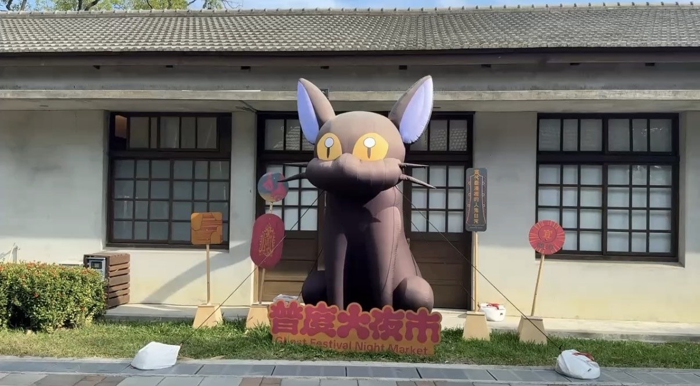
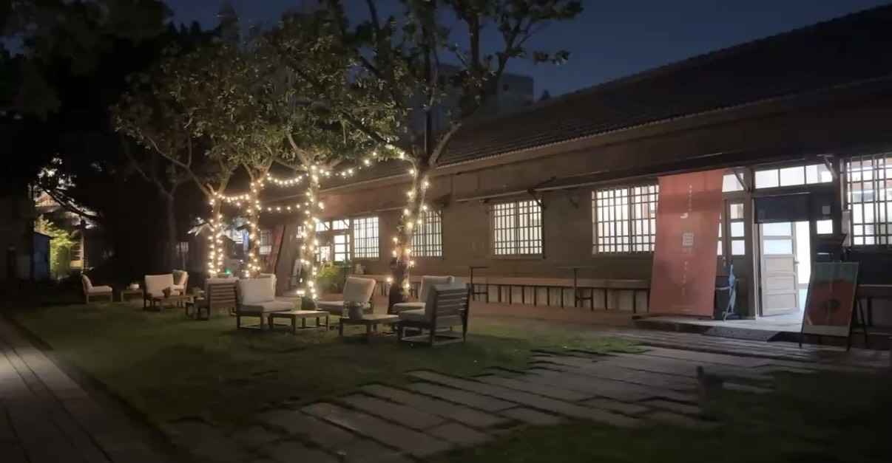
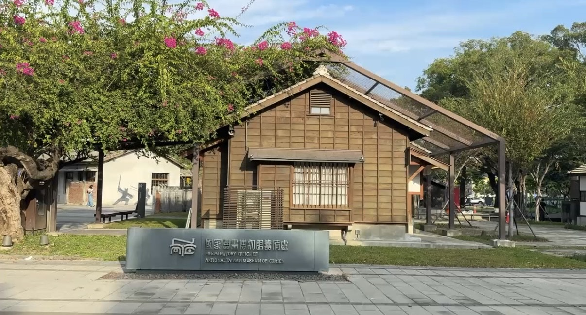

漫畫改編焦點
《用九柑仔店》精選篇
阮光民原著改編 ｜ 90 mins
描繪老店人情與土地記憶，透過暖色光影重現臺灣鄉鎮的在地溫度。

阮光民原著改編 ｜ 90 mins
描繪老店人情與土地記憶，透過暖色光影重現臺灣鄉鎮的在地溫度。

3D 動畫長片 ｜ 88 mins
跨世代本土傳奇漫畫的全新 3D 視覺詮釋，呈現經典英雄的動態張力。

金馬最佳動畫 ｜ 91 mins
以奇幻廢棄物世界探討青少年內心成長，細膩的美術設定與視覺衝擊。
座落於臺中市西區的「國家漫畫博物館園區」，前身為臺中刑務所官舍群。本次專題影展跳脫傳統封閉黑盒子電影院，結合戶外大樹草坪、木造官舍空間，將平面分鏡與立體動態影像疊合，引導觀眾在歷史紋理中閱讀漫畫鏡頭語言。